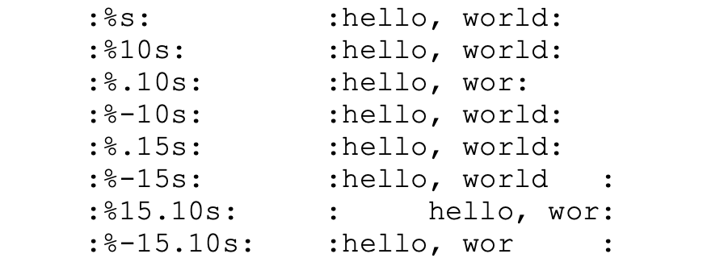
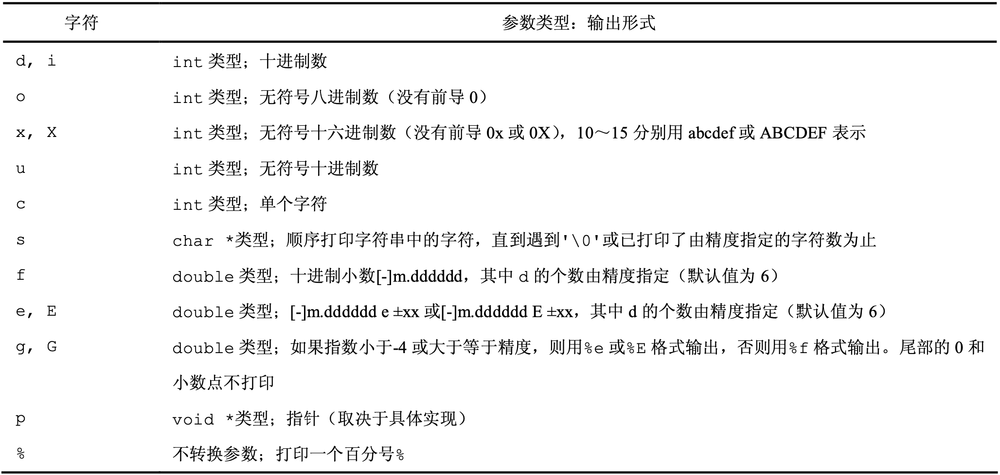
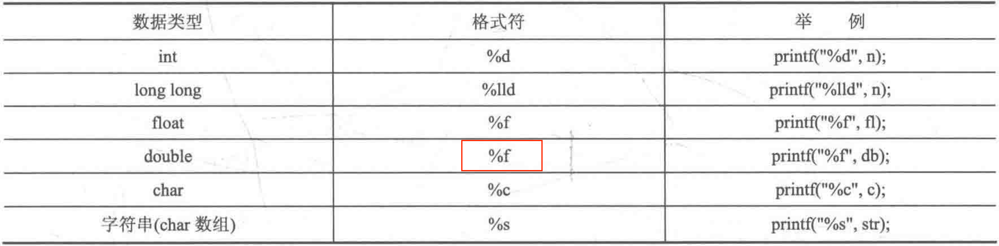
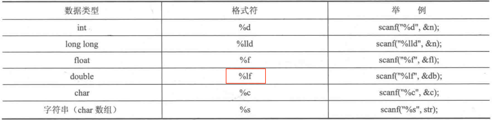

输入输出
所有键盘输入都是先存放于缓冲区中，当按下 ↵ 时（换行符也进入缓冲区中），也就是告诉程序“输入暂时结束了，请去处理”。程序从缓冲区读取数据，当缓冲区内的数据读完后才等待用户再输入。
getchar 与 putchar¶
getchar 即从 stdin 中读取一个字符（包括空格、tab、换行等）。读取失败（例如遇到文件结尾）时返回 EOF。
putchar 将一个字符写入 stdout，同时也返回该字符。若发生错误，则返回 EOF。
gets 与 puts¶
用 gets 输入字符串时，换行符被转化为 \0 来表示字符串输入结束，因此换行符不会留在缓冲区中。用 gets 输入时只有换行能使输入结束，空格、tab 都将是字符串的一部分。
注意
用 scanf 和 gets 读取字符串都是不安全的。因为这两个函数读取数据时不检查边界，所以可能会造成内存访问越界。例如：分配了 5 字节的数组空间但是用户输入了 10 字节，scanf 就会读取 10 个字节，多读入的部分会被写到别的变量所在的空间上去，从而可能会导致程序运行异常。
为了避免这种错误，最好用 fgets 来完成字符串的输入，因为 fgets 可以指定输入的最大长度限制。例如：
puts 函数将结束符 \0 转化为换行符，因此调用 puts 后会自动换行。
printf¶
格式字符串包含两种类型的对象：
-
普通字符：直接写入输出流。
-
转换说明：经替换后写入输出流。
每个转换说明由 3 部分构成：
-
一个
%（表明接下来是一个转换说明） -
控制参数：
常用控制参数 功能 -在给定宽度内左对齐 m.n最小字段宽度为 \(m\)，精度为 \(n\) 
一些示例 -
转换字符：

-
一些例子：

scanf¶
scanf 的返回值为成功输入与格式控制符成功匹配并被读入变量的个数。如果没有数据被成功读入，则返回值为 0。
发生以下 3 种情况，输入即结束，之后的输入都失败：
-
在缓冲区中遇到空白字符
如果格式控制符中含有空白字符，则
scanf会从缓冲区中读入并忽略掉空白字符，直到遇到一个非空白字符为止。 -
遇到与格式说明符不同的非法字符输入
-
达到输出域宽时
一些例子：

sscanf 与 sprintf¶
利用 sprintf() 可将数据输出到（存入）字符串中，起到将数据转换为字符串的效果。
利用 sscanf() 可从字符串中读取数据，起到将字符串转换为数据的效果。